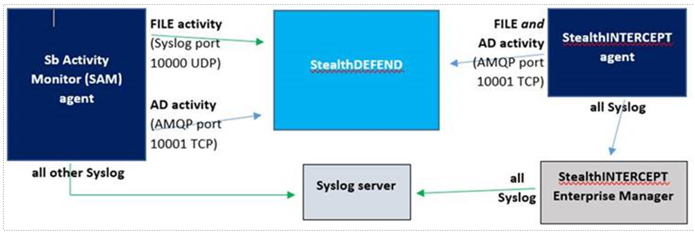

Channel: Internal
Summary: explanation and diagram of differences in activity data flow between SAM and SI agent
Submitted by: Robert Parsons
Product: SAM,SI,SD
Affected Versions: SAM 4.0+, SI 6.0+, SD 2.0+
Affected Module: syslog/amqp
Dev Ticket: N/A
Resolved In Version: N/A
KB Type: FAQ
Issue: How does data flow from SAM and INTERCEPT agents to DEFEND or syslog servers?
Instructions: see below
SAM agents:
- Sends both Syslog and AMQP data directly to destination
- SAM console is never involved in this communication
- File activity uses syslog on port 10000 UDP
- AD activity uses AMQP on port 10001 TCP (requires DEFEND app token)
INTERCEPT agents:
- File and AD activity sent to DEFEND directly from agent using AMQP on port 10001 TCP (requires DEFEND app token)
- All syslog is sent via the Enterprise Manager rather than the SI agent (syslog is not used by SI agents to send to DEFEND)
